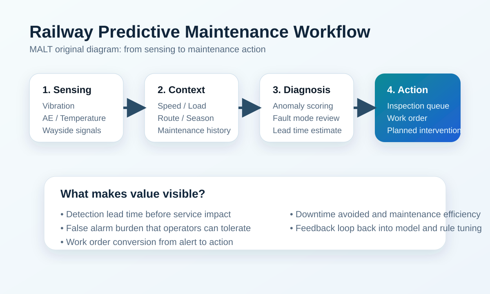

철도 예지보전은 더 이상 모델 성능 경쟁만으로 설명되지 않습니다. 어떤 자산을 먼저 볼지, 어떤 데이터를 묶을지, 경보 이후 누가 무엇을 할지까지 연결해야 실제 운영 가치가 생깁니다. 이 가이드는 철도 운영 조직이 예지보전을 기술 실험이 아닌 정비 의사결정 체계로 전환할 때 필요한 기본 구조를 정리합니다.
AdSense와 검색 유입 관점에서 중요한 것은 최신 논문 요약이 많다는 사실보다, 방문자가 실제 문제를 해결할 수 있는 대표 페이지가 있느냐입니다. 이 글은 MALT의 일간 논문 분석을 실제 운영 판단으로 이어주는 중심 허브 역할을 합니다.
현장에서는 예지보전을 흔히 남은 수명 예측이나 이상 탐지 모델로만 이해합니다. 하지만 실제 철도 운영에서는 감시, 진단, 예측, 작업 지시 연결이 함께 있어야 합니다. 경보를 띄우는 것만으로는 충분하지 않고, 그 경보가 어떤 inspection이나 component change로 연결될지까지 정의되어야 운영 시스템이 됩니다.
그래서 철도 예지보전의 본질은 고장을 맞히는 것보다 정비 판단을 더 일찍, 더 안정적으로 만들 수 있는 체계를 만드는 일에 가깝습니다.

파일럿 단계에서는 모든 자산을 한 번에 다루기보다 운영 영향이 크고 데이터 확보가 쉬운 자산부터 시작하는 편이 좋습니다. 일반적으로는 wheelset, bearing, gearbox 같은 회전체 자산이 가장 현실적인 출발점입니다. 이런 자산은 진동, 음향, 온도 데이터를 통해 조기 징후를 보기 쉽고, 고장 시 운영 리스크도 큽니다.
철도 예지보전의 성패는 모델 구조보다 데이터 구조에서 갈리는 경우가 많습니다. 상태 데이터만 저장하면 운영 조건 변화에 약해지고, 정비 이력이 없으면 예측의 품질 자체를 검증하기 어렵습니다.
철도 예지보전은 정확도만으로 평가하면 현장 가치가 왜곡될 수 있습니다. 실제로 중요한 것은 얼마나 일찍 경고했는지, 불필요한 점검을 얼마나 줄였는지, 경보가 실제 작업 지시로 얼마나 전환됐는지입니다.
처음 30일은 자산 1종만 고르고 데이터 소스 1~2개만 연결하는 편이 좋습니다. 90일 안에는 KPI와 리뷰 프로세스를 합의하고, 6개월 시점에는 CMMS 연계와 자산 범위 확장 여부를 판단해야 합니다. 파일럿의 목표는 처음부터 완벽한 AI 모델을 만드는 것이 아니라, 데이터와 작업 흐름이 닫힌 루프를 이루는지 확인하는 것입니다.
초기에는 임계치 기반 규칙, FFT 특징, 단순 이상 탐지처럼 설명 가능하고 운영팀이 받아들이기 쉬운 구조가 더 현실적입니다. 데이터가 쌓이면 CNN, transfer learning, physics-informed 모델로 확장할 수 있지만, 최신 모델보다 중요한 것은 현재 조직이 감당할 수 있는 검증 체계입니다.
이 페이지는 MALT의 AI-managed workflow가 작성한 evergreen guide이며, 내부 아카이브와 공개 글을 바탕으로 사람이 읽기 쉬운 운영형 설명으로 재구성했습니다.